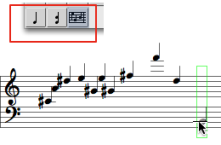
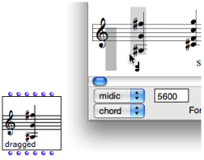

OpenMusic DocumentationHiérarchie de section : OM 6.6 User Manual > Score Objects > Score Editors > Harmonic Objects > Pitches
OpenMusic DocumentationHiérarchie de section : OM 6.6 User Manual > Score Objects > Score Editors > Harmonic Objects > Pitches
Navigation : page précédente | page suivante
Attention, votre navigateur ne supporte pas le javascript ou celui-ci à été désactivé. Certaines fonctionnalités de ce guide sont restreintes.
Editing Pitches
The tools of the editors palette define several hierarchic edition levels.
Note tool - to edit selected notes.
 Chord tool - to edit whole chords.
Chord tool - to edit whole chords. Voice tool - more specifically dedicated to the voice object, can apply to a whole chord-seq .
Voice tool - more specifically dedicated to the voice object, can apply to a whole chord-seq .
A whole object can be selected with a click and drag in any case .
Adding Notes and Chords
Adding Notes in Note and Chord Objects
In note objects :
select the note tool
Cmdclick in the score.
The default or current value of the object is modified.
In chord objects :
select the chord tool or the note tool
Cmdclick in the staff to add a note.

Adding Notes to a Chord in a Chord-Seq
Chords can be edited in the chord-seq editor, or in an internal chord window.
To edit a chord from a chord-seq window :
Select the chord tool and
Cmdclick on the chord : a grey note appears at the root of the green-framed chord.Change its pitch with the
↑or↓keys.Click in the editor window to validate.

To edit a chord in a
internal chordwindow :Select the note or the chord tool.
Double click on the chord : the
internal chordwindow pops up.Cmdclick on the staff to insert notes in the chord.

Adding Chords in a Chord-seq

|
|
Deleting Items
|

|
Extracting Chords

|
Chord factory boxes can be dragged out of any type of score editor – but the note editor. To create a factory box :
It is materialized as a factory box. |
Score Editors
Group / Union Chords
The group and union chords commands allow to gather several chords into one chord.
On |

|
Group Chords
The group chords command allows to preserve the individual offsets of the chords.
|

|
Union Chords
The union chords command gathers several chords graphically and temporally in a same chord.
|

|
Displaying Modes
Features

The order and offsets of the pitches in the list can be expressed via the "order" and "offset" modes of the Editor Control.
The Editor Control lower menu allows to modify the displaying of chords. Notes can be ordered according to their :
- pitch :
arp upandarp downmodes - order in the pitches list :
ordermode - offset :
offsetmode.
A small vertical line marks the starting point of the chord.
Références :
Plan :
Navigation : page précédente | page suivante
A propos...(c) Ircam - Centre Pompidou